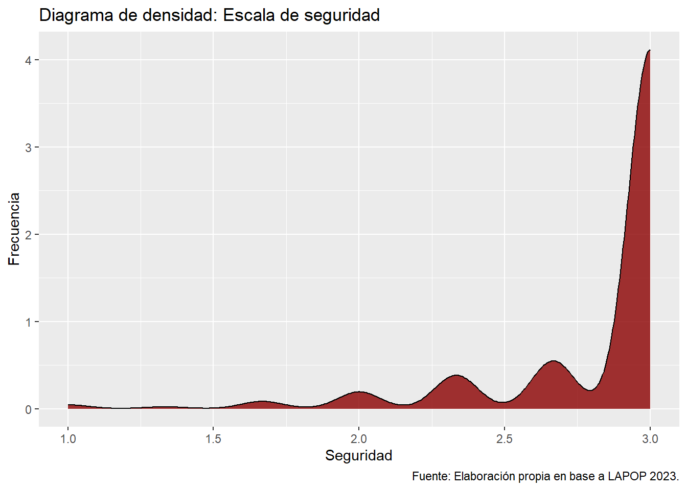
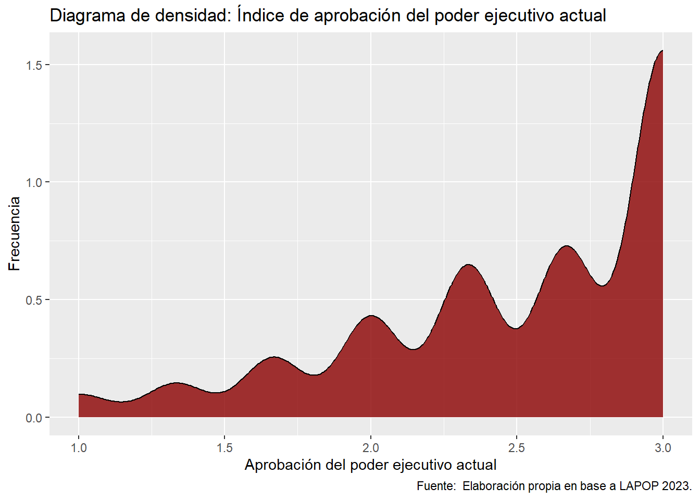
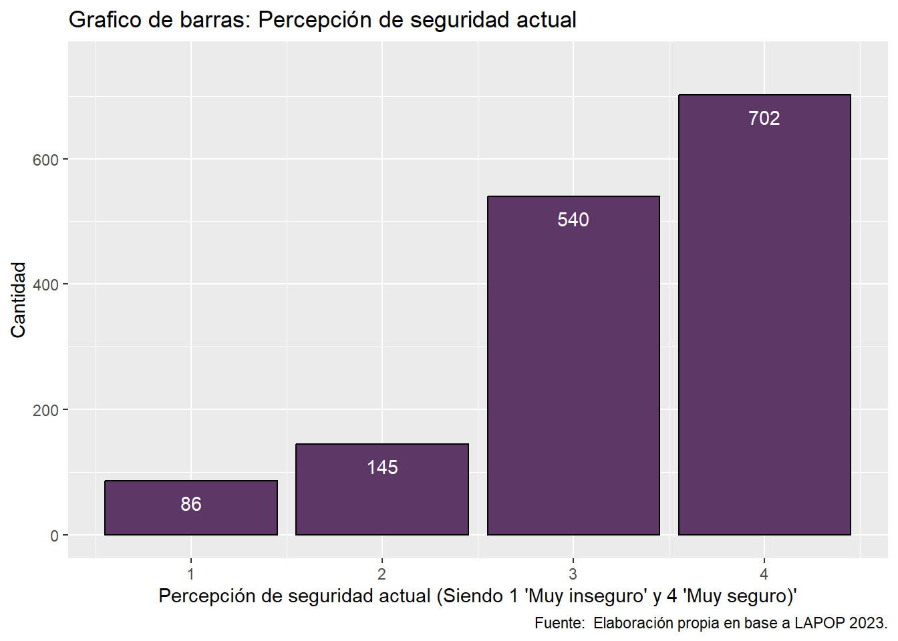
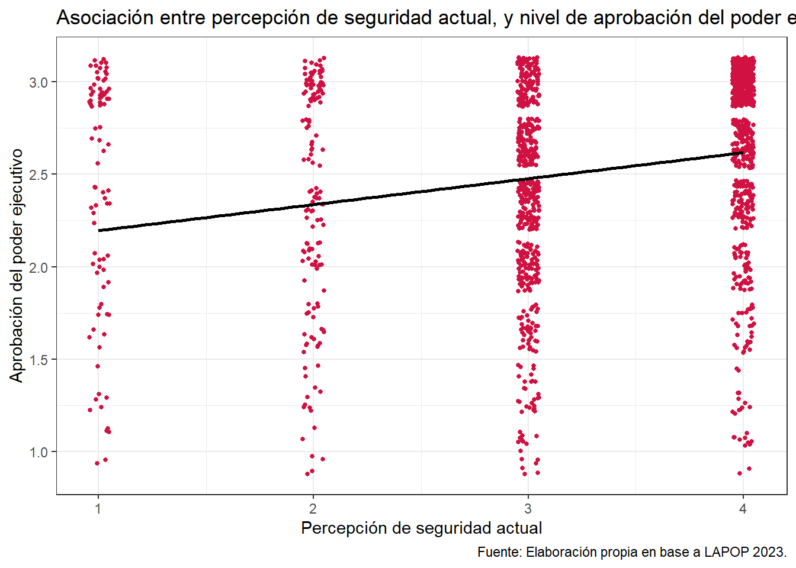
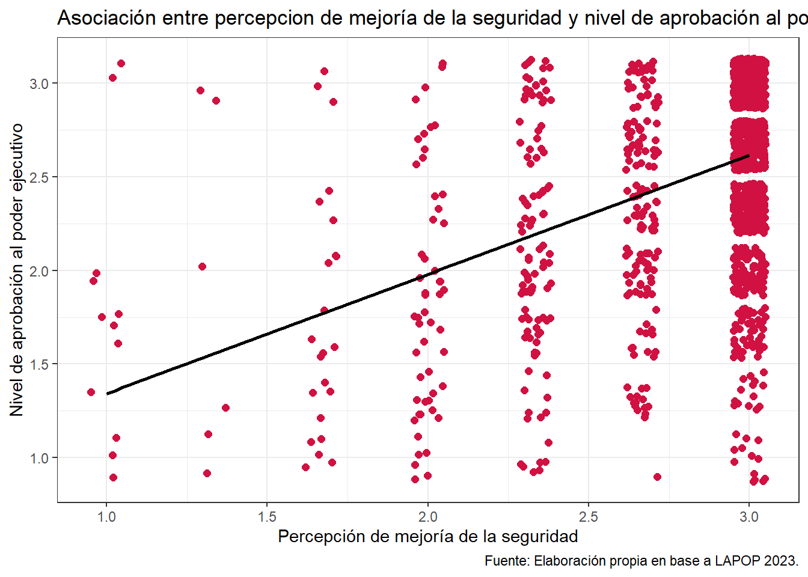
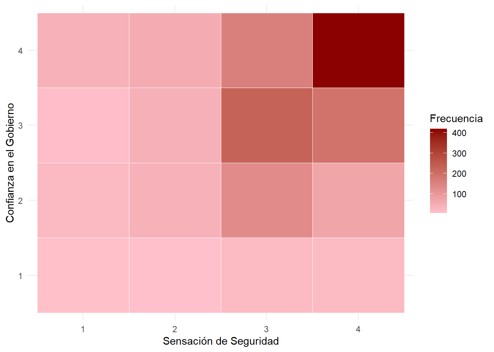

Impacto de la percepción de seguridad en la aprobación de Bukele y confianza en el gobierno: Un análisis bivariado con datos de LAPOP 2023
Estadística Correlacional 2024, Carrera de Sociología - Universidad de Chile
Profesor: Juan Carlos Castillo
Apoyos Docentes: Andreas Laffert y Martín Venegas
Autores/as
Bastián Martin Gerdes
Isidora Valencia Almendras
Maite Jullian Corral
Manuela Chateau Vives
Marta Bascuñán Soto
Fecha de publicación
1 de diciembre de 2024
Resumen
El Salvador ha desarrollado una política represiva y ha limitado derechos constitucionales de su ciudadanía en razón de mejorar la seguridad de dicho país. Se realizaron 3 asociaciones entre variables de la base de datos en la Encuesta Latin American Political Opinion Project (LAPOP), del año 2023. Este estudio tiene por objetivo contrastar tres hipótesis, primero, se espera que a mayor percepción de seguridad en la actualidad, mayor aprobación de Bukele (H1), segundo, se espera que a mayor noción de que mejoró la seguridad, mayor aprobación de Bukele (H2), y por último, se espera que exista una asociación entre la sensación de seguridad en la actualidad y la confianza en que el gobierno nacional está haciendo lo correcto (H3). Se utilizó el estadístico de prueba de hipótesis Spearman para las primeras dos asociaciones, y para la última se usó Chi cuadrado a a través del software Rstudio. Al hacer el análisis bivariado se puede mencionar que existe evidencia a favor de las hipótesis H1; (r =0.224, p<0.001), H2; (r =0.4165, p<0.001) y H3; (X2 = 151.94, df = 9, V = 0.185, p<0.001).
1 Introducción
Las fallidas políticas de seguridad de los gobiernos predecesores han aumentado la escalada de la violencia y con esto la desconfianza en instituciones y la clase política tradicional. El descontento con problemáticas sociales y políticas contribuyeron al triunfo de Nayib Bukele en el año 2019, imponiendo un régimen de excepción para combatir a las pandillas, una deriva autoritaria que lo ha convertido en uno de los presidentes salvadoreños mejor evaluados (Sanchez, 2024).
Tras esto, El Salvador ha desarrollado un enfoque multifacético de medidas preventivas y represivas para combatir el crimen y la violencia para la recomposición de la paz dentro de sus límites territoriales, esto debido al aumento de crímenes y la violencia por parte de las pandillas desde finales de marzo del año 2022 (Milena & Sabykira, 2024).
La relevancia de la investigación radica en el alto impacto mediático que ha tenido el gobierno de Bukele. En este mismo sentido, sus políticas con respecto a la seguridad en El Salvador, han sido de gran inspiración a la ultraderecha Latinoamericana, sobre cómo afrontar los niveles de delincuencia y violencia que el continente arrastra los últimos años.
El Salvador se sumaba a los países en los que se había degradado notablemente la democracia (Martí & Rodriguez, 2024). Sabido es la disminución de la calidad democrática en dicho país, por las fuertes políticas impuestas. Es por eso, que es importante visualizar el impacto de dichas políticas en la percepción de seguridad y los niveles de aprobación del gobierno de Nayib Bukele.
La percepción de seguridad, constituye un problema social real, que evidencia las consecuencias personales y sociales. Esto puede traer un problema por modificación de conductas hacia la violencia, aislamiento, abandono y degradación de espacios públicos, estigmatización de grupos considerados peligrosos y una demanda social de mayor seguridad que recae en el poder político (Fuentealba et al., 2016).
Por seguridad se entiende como un estado o condición socio institucional subjetivo, influenciado por experiencias previas, factores sociales, culturales, en el cual se puede hacer libre ejercicio de derechos individuales y colectivos (Guerrero & Ramírez, 2017).
La aprobación del poder ejecutivo actual, centrada en la confianza depositada en Nayib Bukele, puede entenderse como: la confianza se convierte en una condición necesaria para la formación de instituciones, pues su ausencia promueve el conflicto social, ya que las instituciones tienen la función de reducir el grado de incertidumbre que genera la complejidad social (Luhmann, 1996 citado por Beramendi, 2016). La confianza institucional depende de la percepción de buen desempeño y capacidad para satisfacer las demandas ciudadanas. El respaldo a Bukele refleja la percepción de eficacia en su gestión y atención a las expectativas de la población.
Para esta investigación se desarrollaron tres hipótesis, en primer lugar, se espera que a mayor percepción de seguridad en la actualidad, mayor aprobación de Bukele (H1). En segundo lugar, se espera que a mayor noción de que mejoró la seguridad, mayor aprobación de Bukele (H2). Y por último, se espera que exista una asociación entre la sensación de seguridad en la actualidad y la confianza en que el gobierno nacional está haciendo lo correcto (H3).
2 Metodología
2.1 Datos
Para este trabajo, se utilizaron los datos de Latin American Political Opinion Project (LAPOP) [Proyecto de Opinión Pública Latinoamericano] de AmericasBarometer del año 2023, una encuesta que mida las actitudes, evaluaciones, experiencias y comportamientos en adultos en distintos países de América Latina, en temas como la economía, la capacidad estatal, confianza en instituciones, valores individuales, corrupción, seguridad, y más (Vanderbilt University, s.f). Se utilizaron los datos específicos de El Salvador, del año 2023. La encuesta se llevó a cabo entre Julio y Agosto 2023, en modalidad presencial, y tiene un tamaño muestral de 1.516 personas.
2.2 Variables
La variable “m1”, renombrada “aprob_gob” en el procesamiento de los datos, mide la evaluación del encuestado del trabajo realizado por el presidente Nayib Bukele. Es una variable ordinal tipo Likert de 1 al 5, que fue recodificada, para que valores mayores indiquen una mejor evaluación. En la escala recodificada, 1 es “Muy malo (pésimo)” y 5 es “Muy bueno”.
La variable “anestg”, renombrada “gob_correct”, mide el nivel de confianza en que el gobierno nacional hace lo correcto. Es una variable categórica ordinal que va de 1 a 4, que fue recodificada, para que valores mayores indiquen mayor confianza. En la variable recodificada, 1 es “Nada” y 4 es “Mucho”. La variable b21a, renombrada “conf_pres”, mide el nivel de confianza en el presidente. Es una escala ordinal que va de 1 a 7, donde 1 es “Nada” y 7 es “Mucho”.
La variable “aoj11”, renombrada “sensa_seg”, mide la percepción de seguridad en la comunidad/colonia frente a la posibilidad de ser víctima de asalto o robo. Es una variable categórica ordinal que va de 1 a 4, que fue recodificada, para que valores mayores indiquen mayor percepción de seguridad. En la variable recodificada, 1 es “Muy inseguro(a)”, y 4 es “Muy seguro(a)”.
La variable “soe1”, renombrada “seg_pais”, evalúa si, según el/la encuestado/a, la situación actual de seguridad del país está mejor, igual, o peor que antes del régimen de excepción. Es una variable ordinal que va de 1 a 3, donde 1 es “Mejor”, 2 es “Igual”, y 3 es “Peor”. Fue recodificada para que un valor más alto indique una apreciación positiva. En la variable recodificada, 1 es “Peor” y 3 es “Mejor”.
La variable “soe2”, renombrada “seg_com”, evalúa si, según el/la encuestado/a, la situación actual de seguridad en su comunidad o colonia está mejor, igual, o peor que antes del régimen de excepción. Es una variable ordinal que va de 1 a 3, con los mismos valores que “soe1”. Fue recodificada para que un valor más alto indique una apreciación positiva. En la variable recodificada, 1 es “Peor” y 3 es “Mejor”.
La variable “soe3”, renombrada “seg_fam”, evalúa si, según el/la encuestado/a, la situación actual de seguridad en su familia está mejor, igual, o peor que antes del régimen de excepción. Es una variable ordinal que va de 1 a 3, con los mismos valores que “soe1”. Fue recodificada para que un valor más alto indique una apreciación positiva. En la variable recodificada, 1 es “Peor” y 3 es “Mejor”.
Se crearon dos variables nuevas. Primero, un índice de aprobación del poder ejecutivo actual, de Nayib Bukele, (“indice_gob”), reuniendo las variables “aprob_gob”, “gob_correct”, y “conf_pres”; considerando que las variables miden distintas dimensiones de la aprobación del poder ejecutivo. Dado que las variables tienen todas niveles de medición distintos, se recodificaron de modo que todas quedaron con 3 niveles, donde 1 indica menor presencia del atributo o una apreciación negativa, y 3 indica mayor presencia del atributo o una apreciación positiva. Se promediaron las 3 variables (con igual ponderación), creando un índice (continuo) que va de 1 a 3, donde valores más cercanos a 1 indican menor aprobación del poder ejecutivo, y más cercanos a 3 indican mayor aprobación.
Además, se creó una escala con las variables “seg_pais”, ” seg_com”, y “seg_fam”, a modo de unir las tres variables que preguntan sobre la percepción de mejoría de la situación de seguridad después del régimen de excepción (“escala_seg”). Se promediaron las tres variables, generando una escala continua que va del 1 al 3, donde 1 es “Peor” y 3 es “Mejor”, y los valores intermedios indican mayor proximidad a una u otra apreciación.
Figura 1: Tabla: Resumen de descriptivos de todas las variables
2.3 Métodos
Para evaluar Hipótesis 1, se calculó el coeficiente de correlación de Spearman entre las variables “sensa_seg” e “indice_gob”, para evaluar si existe una correlación estadísticamente significativa entre percepción de seguridad actual y aprobación al poder ejecutivo.
Para la Hipótesis 2, se calculó el coeficiente de correlación de Spearman entre las variables “escala_seg” e “indice_gob”, para evaluar si existe una asociación estadísticamente significativa entre la percepción de mejoría de la seguridad y aprobación al poder ejecutivo.
En el caso de Hipótesis 3, se usó la prueba de Chi-Cuadrado (X2) entre las variables “sensa_seg” y “gob_correct”, para evaluar si existe una asociación estadísticamente significativa entre la percepción de seguridad actual y el nivel de confianza en que el gobierno nacional está haciendo lo correcto.
Los análisis estadísticos para contraste de hipótesis, y análisis descriptivo se realizaron en el software RStudio.
3 Análisis
3.1 Análisis descriptivo
3.1.1 Escala de percepción de mejoría de la seguridad
Figura 2: Tabla de descriptivos: de escala de seguridad
Como se presenta la Figura 2, en la escala de percepción de mejoría de la seguridad (después del régimen de excepción) el promedio es de 2.838651. Dado que el mínimo es 1, y el máximo es 3, se deduce de la media que mayoritariamente las personas consideran que la situación de seguridad ha mejorado. La mediana es 3, lo que indica que al menos el 50% de las personas encuestadas opinan que la seguridad ha mejorado.
ver código
diagrama3<-ggplot(data = data, mapping =aes(x = escala_seg)) +geom_density(color ="black", fill ="darkred", alpha =0.8) +labs(title ="Diagrama de densidad: Escala de seguridad", x ="Seguridad", y ="Frecuencia",caption ="Fuente: Elaboración propia en base a LAPOP 2023.") diagrama3

Figura 3: Diagrama de densidad: Escala de seguridad
Figura 4: Tabla de descriptivos: índice de gobierno
En el índice de aprobación del poder ejecutivo la Figura 4 presenta que el promedio es 2.51437, y la mediana es 2.66. Dado que el mínimo es 1 y el máximo 3, se deduce de la media y la mediana que hay una alta aprobación del poder ejecutivo, pero menos transversal que la percepción de mejoría de la seguridad.
ver código
diagrama5<-ggplot(data = data, mapping =aes(x = indice_gob)) +geom_density(color ="black", fill ="darkred", alpha =0.8) +labs(title ="Diagrama de densidad: Índice de aprobación del poder ejecutivo actual", x ="Aprobación del poder ejecutivo actual", y ="Frecuencia",caption ="Fuente: Elaboración propia en base a LAPOP 2023.") diagrama5

Figura 5: Diagrama de densidad: Índice de aprobación del poder ejecutivo actual
Figura 6: Tabla de descriptivos: Percepción de seguridad
La variable de percepción de seguridad actual “sensa_seg”, como se muestra en la Figura 6, tiene un total de 1473 de observaciones válidas, que varían entre el 1 y el 4. La media es 3.2614, con una mediana de 3, lo que sugiere una distribución centrada cerca de este valor, y una percepción de seguridad actual mediana-alta.
ver código
grafico7<-ggplot(data = data, mapping =aes(x = sensa_seg)) +geom_bar(color ="black", fill ="#5D3766") +scale_y_continuous(limits =c(0,750)) +geom_text(aes(label = ..count..), stat ="count", vjust =2, colour ="white") +labs(title ="Grafico de barras: Percepción de seguridad actual",y ="Cantidad",x ="Percepción de seguridad actual (Siendo 1 'Muy inseguro' y 4 'Muy seguro)'",caption ="Fuente: Elaboración propia en base a LAPOP 2023.") grafico7

Figura 7: Grafico de barras: Percepción de seguridad
3.2 Análisis estadístico bivariado
3.2.1 Hipótesis 1
ver código
grafico8 <- sjPlot::plot_scatter(data = data, x = sensa_seg,y = indice_gob, fit.line ="lm", show.ci =FALSE, dot.size =1) +labs(title ="Asociación entre percepción de seguridad actual, y nivel de aprobación del poder ejecutivo", y ="Aprobación del poder ejecutivo", x ="Percepción de seguridad actual",caption ="Fuente: Elaboración propia en base a LAPOP 2023.") +theme_bw() grafico8

Figura 8: Asociación entre percepción de seguridad actual, y nivel de aprobación del poder ejecutivo
Correlación
t
p-value
df
Método
Alternativa
95% IC
0.2238
8.8086
< 0.001***
1471
Pearson’s product-moment correlation
two.sided
[0.17,0.27]
Figura 9: Resultados del cálculo de la correlación de Spearman para H1
H0 : La relación entre la percepción de seguridad actual (“sensa_seg”) y el nivel aprobación al poder ejecutivo (indice_gob) es nula o negativa.
HA: En medida en que la percepción de seguridad actual (“sensa_seg”) es mayor, el nivel aprobación al poder ejecutivo (indice_gob) es mayor.
En la Figura 8 se muestra la correlación de las variables “sensa_seg” y “indice_gob”. Se observa que la concentración de casos aumenta hacia los valores mayores de percepción de seguridad; y al mismo tiempo hacia más altos de aprobación del poder ejecutivo, pero con menor intensidad. Además, la línea de regresión muestra una correlación ascendente y de moderada pendiente. Para calcular la correlación, se calculó el coeficiente de correlación de Spearman. Se puede apreciar en la Figura 9 que según los criterios de Cohen la correlación es pequeña, y es positiva, y estadísticamente significativa (r =0.224, p<0.001), lo que permite rechazar la hipótesis nula H0. Con un 99.9% de confianza se rechaza la hipótesis nula H0 y podemos decir que existe evidencia a favor de la hipótesis alternativa HA, de que a mayor percepción de seguridad en la actualidad, mayor la aprobación del poder ejecutivo.
3.2.2 Hipótesis 2
ver código
grafico9 <- sjPlot::plot_scatter(data = data, x = escala_seg,y = indice_gob, fit.line ="lm", show.ci =FALSE, dot.size =2) +labs(title ="Asociación entre percepcion de mejoría de la seguridad y nivel de aprobación al poder ejecutivo", y ="Nivel de aprobación al poder ejecutivo", x ="Percepción de mejoría de la seguridad",caption ="Fuente: Elaboración propia en base a LAPOP 2023.") +theme_bw() grafico9

Figura 10: Asociación entre percepción de mejoría de seguridad después del estado de excepción y nivel de aprobación al poder ejecutivo
Correlación
t
p-value
df
Método
Alternativa
95% IC
0.4165
17.57
< 0.001***
1471
Pearson’s product-moment correlation
two.sided
[0.37,0.46]
Figura 11: Resultados del cálculo de la correlación de Spearman para H2
H0 : La relación entre percepción de mejoría de la seguridad después del régimen de excepción (“escala_seg”) y la aprobación al poder ejecutivo (indice_gob) es nula o negativa.
HA: En medida en que la sensación de mejoría de la seguridad después del régimen de excepción (“escala_seg”) es mayor, la aprobación al poder ejecutivo (indice_gob) es mayor.
En la Figura 10 se muestra la correlación entre las variable “escala_seg” e “indice_gob”. Se observa que una concentración de casos que aumenta fuertemente hacia los valores mayores de percepción de mejoría de la seguridad; y en menor medida, también aumenta hacia valores mayores de aprobación al poder ejecutivo. Además, la línea negra muestra una correlación ascendente y de fuerte pendiente. Para calcular la correlación, se calculó el coeficiente de correlación de Spearman. Se puede apreciar en la Figura 11 que según los criterios de Cohen la correlación es moderada, y es positiva y estadísticamente significativa (r =0.4165, p<0.001), lo que permite rechazar la hipótesis nula H0. Con un 99.9 de confianza se rechaza la hipótesis nula H0, con evidencia a favor de la hipótesis alternativa HA, de que a mayor percepción de mejoría de la seguridad, mayor es la aprobación al poder ejecutivo.
3.2.3 Hipótesis 3
ver código
tabla <-table(data$sensa_seg, data$gob_correct)tabla_df <-as.data.frame(as.table(tabla))# Heatmapgrafico10<-ggplot(tabla_df, aes(Var1, Var2, fill = Freq)) +geom_tile(color ="white") +scale_fill_gradient(low ="pink", high ="darkred") +labs(x ="Sensación de Seguridad",y ="Confianza en el Gobierno",fill ="Frecuencia" ) +theme_minimal()grafico10

Figura 12: Asociación entre percepción de mejoría de seguridad después del estado de excepción y la confianza en que el gobierno hace lo correcto
Prueba de Chi-cuadrado entre la sensación de seguridad actual y la confianza en que el gobierno nacional hace lo correcto
X2
p-value
df
Método
151.94
< 0.001***
9
Pearson’s Chi-squared test
Figura 13: Resultados de la prueba de Chi-cuadrado (X2) para H3
H0: No existe asociación entre la sensación de seguridad actual (“sensa_seg”) y el nivel de confianza en que el gobierno nacional hace lo correcto (“conf_gob”).
HA: Existe una asociación entre la sensación de seguridad actual (“sensa_seg”) y el nivel de confianza en que el gobierno nacional hace lo correcto(“conf_gob”).
En la Figura 12 se muestra la asociación de las variables “sensa_seg” y “conf_gob”. Se observa que la frecuencia de casos aumenta significativamente hacia mayores valores en la sensación de seguridad actual, y en menor medida, hacia mayores niveles de confianza en que el gobierno nacional hace lo correcto. Se aplicó la prueba de Chi-cuadrado (X2), como se puede apreciar en la Figura 13 nos entregó un valor X2 = 151.94, para 9 grados de libertad, y un valor p<0.001. Además, se calculó el V de Cramer, que señala el tamaño del efecto; el cual sería pequeño en este caso, con V = 0.185. Con 9 grados de libertad, se observa que el X2 empírico es mayor al X2, crítico. Por lo tanto, tenemos una asociación pequeña y estadísticamente significativa. Con un 99.9% de confianza, se rechaza la hipótesis nula H0 de no asociación entre las variables (X2 = 151.94, df = 9, V = 0.185, p<0.001).
4 Conclusiones
El análisis exploró la relación entre la sensación de seguridad actual, la percepción de mejora de seguridad y la aprobación del poder ejecutivo en las personas de El Salvador. El análisis fue producido a base de la encuesta LAPOP del 2023 desarrollada en El Salvador. Las correlaciones entre las variables resultaron ser moderadas, positivas y significativas estadísticamente, por lo que se observa que efectivamente existe una relación entre la seguridad y la confianza en el poder ejecutivo en El Salvador, aunque esta pareciera no ser tan fuerte. Como limitaciones dentro del presente trabajo, se observa el hecho de que la legitimidad en el gobierno no se relaciona exclusivamente con la sensación y percepción de seguridad, por lo que el análisis producido no resulta suficiente para comprender la compleja situación en El Salvador. Otra limitación se encuentra en el tipo de datos utilizados, ya que al ser una encuesta de opinión pública, la información obtenida de esta puede estar sesgada, resultando en datos que tal vez no representan de la forma más adecuada la realidad en El Salvador. Por otro lado, resultaría interesante analizar qué otros factores se relacionan con la legitimidad de Nayib Bukele, si es que los hay. Además de esto, podrían realizarse comparaciones con otros años y con otros países de la región en los que se haya realizado la encuesta LAPOP.
5 Bibliografía
Beramendi, M., Delfino G. & Zubieta E. (2016) Confianza Institucional y Social: Una Relación Insoslayable. Acta de investigación psicológica, 6(1), 2289 - 2301. https://www.redalyc.org/articulo.oa?id=358945983005
Duque y Moreno (2024). Análisis de la efectividad de las estrategias de seguridad en la reducción de la violencia en el Salvador: Administración de Najib Bukele (2022-2023) [Universidad Tecnológica ECOTEC]. https://repositorio.ecotec.edu.ec/handle/123456789/1157
Fuentealba, P. Rojas, J. y Barriga, O. (2016). Diferencias en la percepción de inseguridad a nivel cognitivo y emocional de acuerdo al perfil sociodemográfico y político: Estudio del Gran Concepción, Chile. Política criminal, 11(22), 620-655. https://dx.doi.org/10.4067/S0718-33992016000200008
Guerrero, B. M., y Ramírez, I. S. (2017). Informe final de proyecto de título para optar al grado académico de licenciado en trabajo social y el título profesional de trabajador social. [Tesis de pregrado, Universidad de Valparaíso] http://repositoriobibliotecas.uv.cl/handle/uvscl/5507
Martí Puig, S., y Rodríguez Suárez, D. (2024). Nayib Bukele, seguridad a cambio de democracia. Más Poder Local, (56), 141-154. https://doi.org/10.56151/maspoderlocal.231
Sanchez, M. (2024). De las políticas de mano dura a la política del estado de excepción en El Salvador. ECA: Estudios Centroamericanos, 79(776), 13-46. https://doi.org/10.51378/eca.v79i776.8198